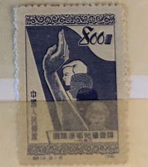
| SOURCE | TITLE| IMAGE MATCH | click to source page |
| eBay | Family, Society Decimal Chinese Stamps for sale | eBay | 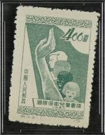 |
| eBay | China 1951 PRC C14 (Perf 13) 800 Yuan Original Postally Used!! Sc #137 VFU U37 | eBay | 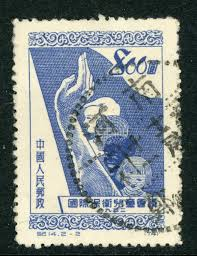 |
| lastdodo.com | 1952 Child Protection Stamp catalogue - LastDodo | 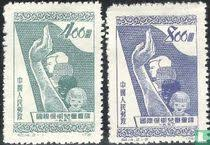 |
| HipStamp | Browse Listings in Asia / HipStamp | 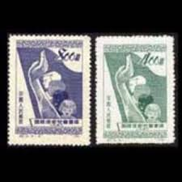 |
| GetArchive | 49 Flags on stamps Images: PICRYL - Public Domain Media Search Engine Public Domain Search | 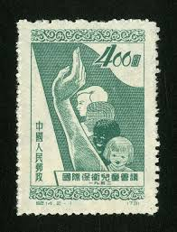 |
| eBay UK | Chinese Stamps without Gum for sale | eBay UK | 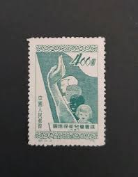 |
| eBay | EDSROOM-14001 PRC 136-137 NGAI 1952 Complete Child Protection | eBay | 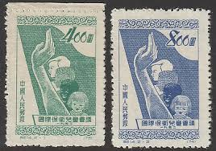 |
| eBay | China 1952 PRC $800 Child Protection Scott #137 Chengtu CDS VFU R164 | eBay | 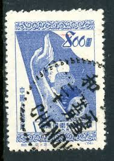 |
| eBay | China Stamps -中国邮票-国际保卫儿童会议- 1952, C14, Scott 136-137- CTO, F-VF | eBay | 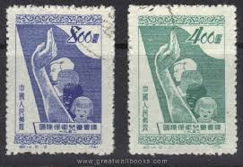 |
| eBay | Mint China Stamp | eBay | 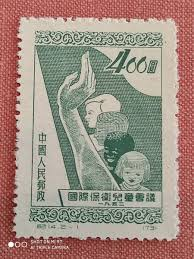 |
| eBay | CHINA - MNG SET - INTERNATIONAL CHILD PROTECTION CONFERENCE - 1952. | eBay | 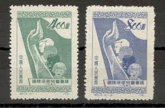 |
| HipStamp | Browse Listings in Asia > China / HipStamp | 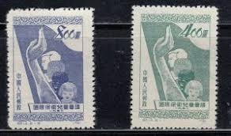 |
| eBay | 1952 PRC CHINA SC#136. ROUGH PERF MNG AIS VF CHILDREN OF RACES | eBay | 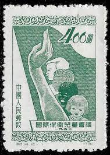 |
| eBay | FREE SHIP China Child Protection Conference 1952 Children Hand (stamp) MNH | eBay | 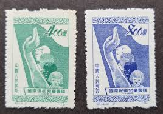 |
| eBay | China 1952 - Used stamp. Mi nr.: 141 c. REPRINT......... (VG) MV-16368 | eBay | 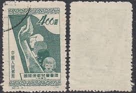 |
| eBay | AOP) China PRC #136-37 unused | eBay | 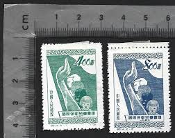 |
| eBay | CHINA PRC Sc#136-7 1952 C14 Children MNH | eBay | 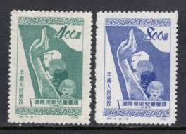 |
| eBay | cn54 China stamp PRC 1952 C14 Sc#136-7 Child Protection | eBay | 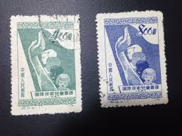 |
| Carousell | Prc china stamp C14 children conference mint, Hobbies & Toys, Memorabilia & Collectibles, Stamps & Prints on Carousell | 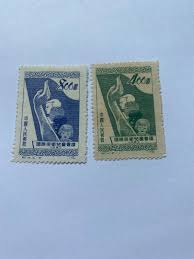 |
| eBay | China 1952 - Mint stamp issued without gum. Mi nr.: 141 c... (VG) MV-10905 | eBay | 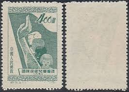 |
| eBay | CHINA PRC 1952 C14 INTL. CHILD PROTECTION CONF. (Sc 136-37) VF MNH | eBay | 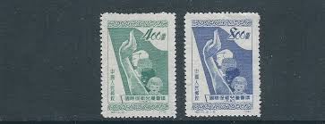 |
| eBay | China C14 Conference in Defence of Children Set of 2v - Mint NGAI (SL176) | eBay | 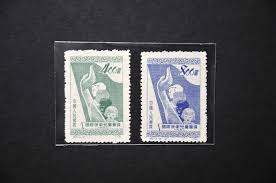 |
| HipStamp | Browse Products in Asia / HipStamp | 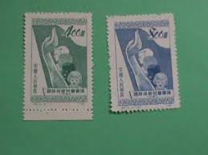 |
| eBay | PR China Stamps C11 Lu Xun, C12 Uprising Taiping, C14 Children, C15 Labor Day 纪C | eBay | 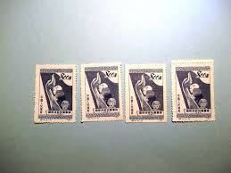 |
| eBay | VF/XF (Very Fine/Extremely Fine) Taiwan Stamps for sale | eBay | 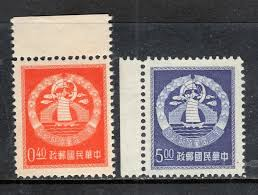 |
| Stamp Auction | Robert A. Siegel Auction Galleries, Inc. Sale - 1037 Page 155 | 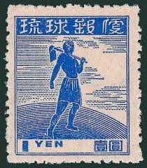 |
| eBay | Gigantor Tetsujin 28 Vintage Japanese Rare Menko card 3Piece Set #15 | eBay | 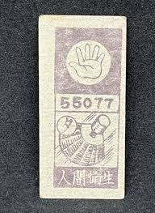 |
| Cherrystone Auctions | Rare Stamps & Postal History of the World - July 11-12, 2023 - CHINA | 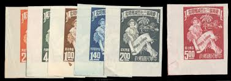 |
| eBay | Cancelled to Order/CTO Black Chinese Stamps for sale | eBay |  |
| Cherrystone Auctions | U.S. & Worldwide - June 15-16, 2011 - CHINA | 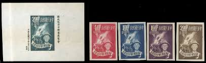 |
| OAPEN | The Representation of Science and Scientists on Postage Stamps | 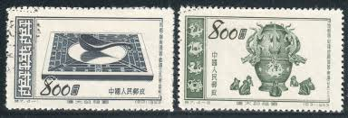 |
| Stamp Community Forum | French Stamps ? Need Help To Identify - Stamp Community Forum | 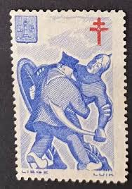 |
| Xabusiness.com | C15 Scott 138-140 International Labour Day - China Stamps | 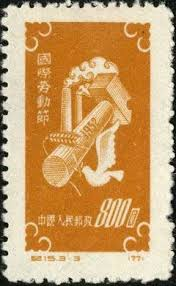 |
| PicClick | PRC CHINA 1920 MH **, stamp booklet Year of the Rat 1984 mint, KW 70,- $26.98 - PicClick | 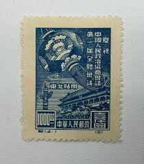 |
| eBay | JAPAN MINT stamps commemorative 【1919-1949 MNH】Japanese unused MB0128.jpg | eBay | 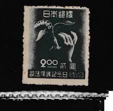 |
| Stamp Auction Network | Schuyler J. Rumsey Philatelic Auctions Sale - 85 Page 118 | 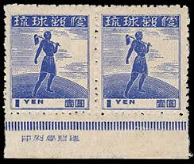 |
| eBay | PR China Stamps S22, 23, 24,26 Reservoir, S28 Atomic Reactor 特22, 23, 24, 26, 28 | eBay | 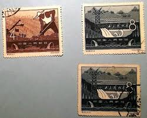 |
| PicClick | CHINA PRC 1996 Shanghai Souvenir Sheet Scott 2730 $1.95 - PicClick | 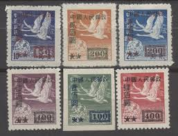 |
| Blogger.com | the sphinx: Godzilla Menko Cards! (part one) | 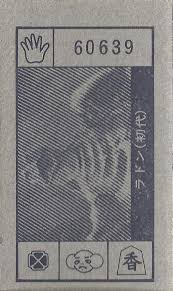 |
| eBay | 1951 China(ROC) #1038(9) on back only cover to US *d | eBay | 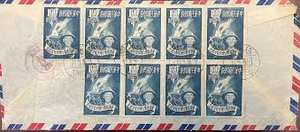 |
| Unravelling the story of Graphic Design in Malaysia | Malaysia Design Archive | 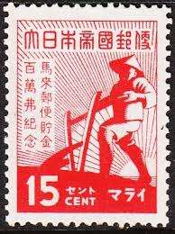 | |
| eBay | Japan 1948 - Mihon Overprint - Specimen Overprint (399a) Mint Hinged | eBay | 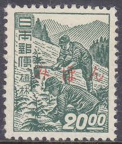 |
| eBay | baseball menko set of 2 for Yomiuri Giants' player Tetsuharu Kawakami Rare old | eBay | 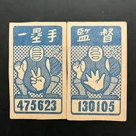 |
| PicClick | CN71 CHINA STAMP Scarce Flying Geese Stamp Overprinted Imperforate Unused 4Block $199.00 - PicClick | 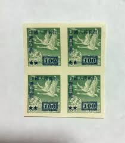 |
| HipStamp | South Vietnam 1965 Scott 252 used - 100d, Founder of Vietnam Hung Vuong | Asia - Vietnam, General Issue Stamp / HipStamp | 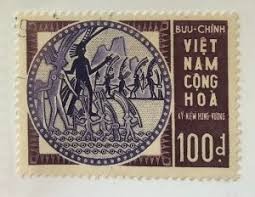 |
| eBay | Viet Nam Scott #251 - #252 Complete Set of 2 Mint Never Hinged | eBay | 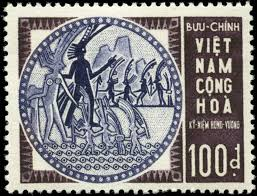 |
| Discover 38 Manchukuo-Postage stamps & country (Manchuria) and postage stamps ideas on this Pinterest board | postage, postal stamps, rare stamps and more | 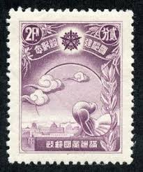 | |
| eBay | OPC 1952 PRC China Methods of Agriculture Set Sc#128-131 Reprints NGAI 46450 | eBay | 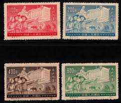 |
| eBay | China C42 4th Congress of World Trade Union Set of 2v - Used (SL197) | eBay | 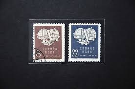 |
| eBay | 1955 Reprints China Stamps #129-131 | eBay | 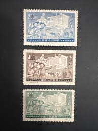 |
| Free stamp catalogue | Stamps from Taiwan - Freestampcatalogue.com - The free online stampcatalogue with over 500.000 stamps listed. | |
| Find Your Stamps Value | NORTH CHINA: North China Postal and Telegraph Administration: Labor day: Farmer and Worker on Globe - 华北地区：华北邮电总局：五一国际劳动节纪念：地球上的农民和工人 | |
| eBay | VIETNAM, SOUTH, 1965 Hung Vuong 100d. Violet & Purple, lhm. | eBay | |
| Ships on Stamps Unit | Maritime Topics On Stamps, Navigation Nautic | |
| eBay | China Stamps PRC Mother Land S7 Scott's 198-201 Mint No Glue | eBay | |
| japanesephilately.com | Occupational Series - Japanese Philately | |
| eBay | Green Postage Chinese Stamps for sale | eBay | |
| eBay | People's Republic Of China Postage Stamps | eBay | |
| World Stamps Project | Germany, Saarland: postage stamps flaws – World Stamps Project |